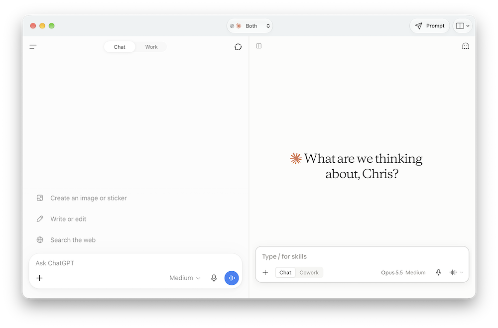

Side-by-side comparison
Choose Both in the workspace toolbar to keep ChatGPT and Claude visible together, then resize the divider or set equal widths.
Duet keeps each service in its familiar web interface while giving you a focused way to switch between them, compare them side by side, send one text prompt to both, or start a fresh conversation from anywhere on your Mac.
Apple Silicon · macOS 15 or later

Features
Choose Both in the workspace toolbar to keep ChatGPT and Claude visible together, then resize the divider or set equal widths.
Press Control–Option–Space to send a prompt to a new ChatGPT conversation, a new Claude conversation, or both.
Send plain-text prompts to the active provider or to both providers at once.
Conversations, chat history, attachments, and provider-specific tools stay inside the official websites.
Standard file pickers and save dialogs, plus macOS permission prompts for microphone, camera, and location.
Sign in directly with each provider. Sessions normally persist between launches, and Duet does not collect, store, or transmit your credentials.
Get started
Sign in directly with each provider. Duet does not collect, store, or transmit your credentials.
Get Duet.zip from the latest release and double-click it to extract the archive.
Drag Duet.app to your Applications folder, then open it. macOS may show a standard first-open confirmation.
Pick ChatGPT, Claude, or Both, and sign in directly in the embedded provider page.
In Duet → Settings, set a startup destination or enable Keep both providers loaded for faster switching.
License
Free to use for any purpose, including paid work. Redistribution is limited to internal organizational use and GitHub forking under the license. Provided as is, without warranty.